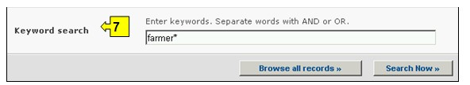
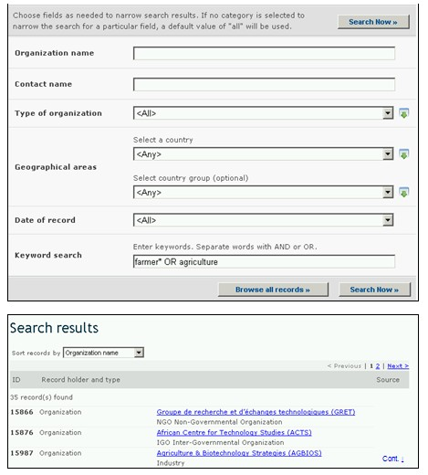

URL: http://bch.cbd.int/database/organizations/
The worldwide and multidisciplinary nature of the Protocol provides a wide stakeholder base for its implementation, extending beyond its Parties. Accordingly, the BCH maintains a database of organizations that are involved in biosafety-related issues.
A search interface for information about Organizations can be accessed from the Finding Information drop down menu on the navigation bar, or from the link in the left hand menu of the Finding Information page or from the link in the Directory of International Organizations involved in Biosafety Activities text on the same page.

Figure 111
The search interface on this page allows users to access information about organizations involved in biosafety and includes summaries of the activities of these organizations and their contact information.
On the Search the Directory of Organizations involved in Biosafety Activities page are seven search criteria boxes provided for refining searches in this database. Each of them has a drop down menu from which it is possible to select the required criteria. The default setting for each drop down menu is the first item at the top of the menu list. On the right side of each box, a button allows the user to activate multiple selections. Once in the multiple selection mode it is possible to add more criteria to the selection by clicking on the relevant criteria while pressing the Ctrl (Control) key.

Figure 112
Box 1 [Organization name] provides an option for the user to search by the name of the organization.

Figure 113
Box 2 [Contact name] allows the user to search for the last name of a specific contact person in the organization.

Figure 114
Box 3 [Type of organization] allows the user to narrow the search to one or more categories of.

Figure 115
Box 4 [Select a country] lists all the country names in a drop down menu, so that users can select one or more specific countries for a search.

Figure 116
Box 5 [Select country group] lists country groups in a drop down menu so that users can select one or more specific groups of countries for a search. The country group list contains all major geographical or political groupings of countries and allows for narrowing the search to records submitted only by the members of the selected group or groups.
Figure 117
Box 6 [Date of record] allows the user to narrow the search according to the date records have been registered in the BCH. The drop down menu provides a number of options for limiting the search to only those records submitted within the selected interval of timeframe (e.g. ‘last day’, ‘last month’, ‘last year’, etc.).

Figure 118
Box 7 [Keyword search] provides an opportunity for using keywords to narrow the search. The user can use standard keyword syntax (combination of AND / OR operators) to search with multiple words or core parts of words (e.g. “Import OR Export”). A search that is made by using keywords only produces results of records containing exactly the searched text and not possible synonyms that have not been inserted (i.e. a search with the single keyword “Maize” will produce a list of records containing the word “Maize” but not the words “Corn” or “Zea mays”).

Figure 119
The search page offers three buttons to produce a record list. The Search Now button (both at the top and bottom of the search interface) allows the user to activate a search based on the search criteria selected in the search facility boxes. The search results are sorted alphabetically by default according to country name. The Browse all records (at the bottom of the search interface) allows the user to obtain a list of all records in this database.

Figure 120
The Search Results pages have a sorting facility above the list of records. This can be used to sort the records according to criteria specific for that category of information. Note that the sorting criteria change when the user selects different search criteria.

Figure 121
Example: A user wishes to identify organizations that work with farmers and types farmer OR agriculture into the Keyword search box. The results indicate a number of organizations with links to farmers. To narrow the search to projects linked to the private sector, the user selects industry in the type of organization box.

Figure 122

Figure 123